本項では、複数の画像を効率よく表示するための機能について学習します。
Photoshop CS4以降からワークスペースの複雑化を防ぎ快適な作業環境を実現するため
複数の画像をタブ形式で表示することができるようになりました。
また同時に、複数の画像をそれぞれ独立させたり、
拡大率の違う画像を一瞬でそろえることもできるようになりました。
自分の作業スタイルに合わせて、これらの機能を使いこなし、
オリジナルのワークスペースを作ることで、より効率的な作業環境を確立することができます。
メニューバーの[ファイル]-[開く]から
素材フォルダ[PS02]の[view-1.jpg]、[view-2.jpg]、[view-3.jpg]を開き画面を確認します。
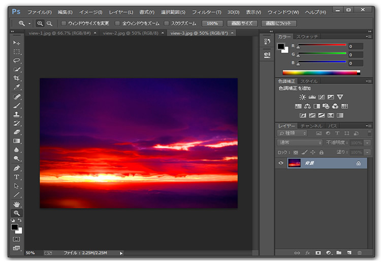
表示された画像のタブをドラッグすることで
タブ内での画像の位置を自由に変更することができます。
左から[view-1.jpg]、[view-3.jpg]、[view-2.jpg]の順に並ぶように
タブを移動させましょう。
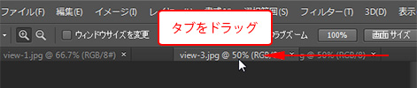
[view-3.jpg]のタブを選択している状態で
メニューバーの[ウィンドウ]から[アレンジ]-[ウィンドウを分離]を選択します。
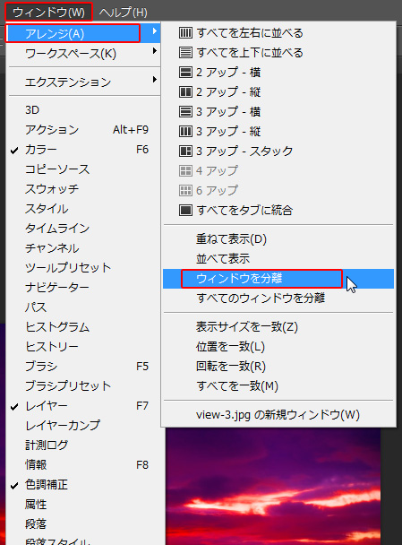
[view-3.jpg]が別ウィンドウで表示されます。好きな位置に動かして確認しましょう。
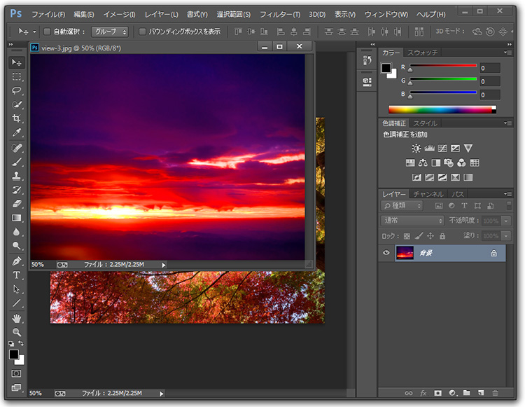
残りの二つも独立したウィンドウにします。
[view-1.jpg][view-2.jpg]どちらかの画像のタブを選択した状態で
メニューバーの[ウィンドウ]から[アレンジ]-[すべてのウィンドウを分離]を選択します。
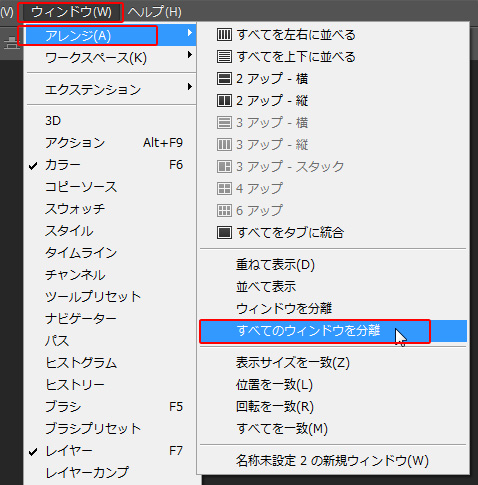
[view-1.jpg]、[view-2.jpg]、[view-3.jpg]がそれぞれ独立したウィンドウになります。
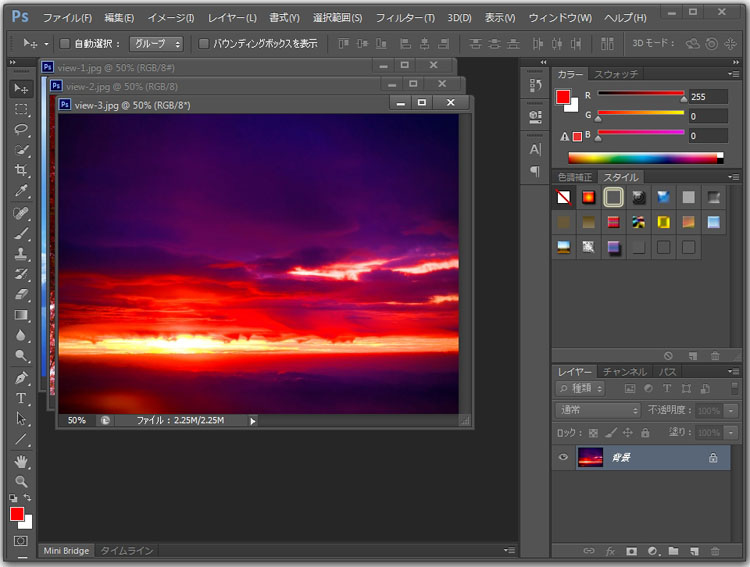
このままではそれぞれの画像が確認しづらいので表示位置を変更します。
メニューバーの[ウィンドウ]から[アレンジ]-[並べて表示]を選択します。
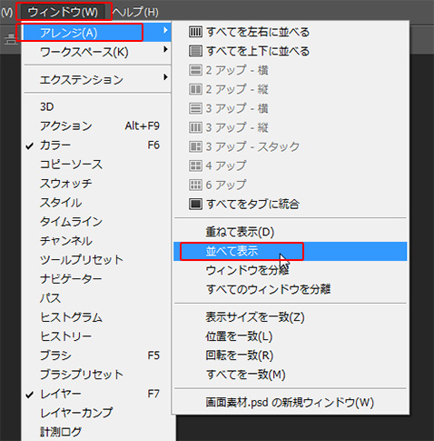
[view-1] 、[view-2] 、[view-3]がワークスペース内に並んで表示されました。
※ウィンドウは下図と同じ並びにならない場合があります。
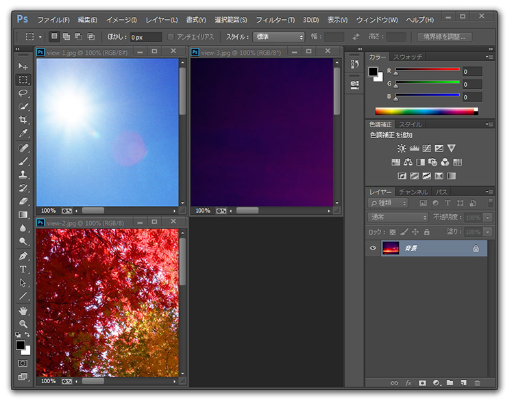
画像の拡大率を変更します。
[view-1.jpg]、[view-2.jpg]、[view-3.jpg]のウィンドウの下部にある
表示倍率をそれぞれ50%、150％、200%に変更します。
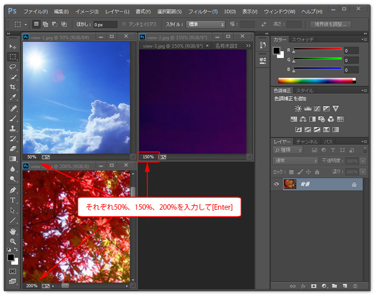
[view-1.jpg]のファイルをクリックし、
メニューバーの[ウィンドウ]から[アレンジ]- [表示サイズを一致] を選択します。
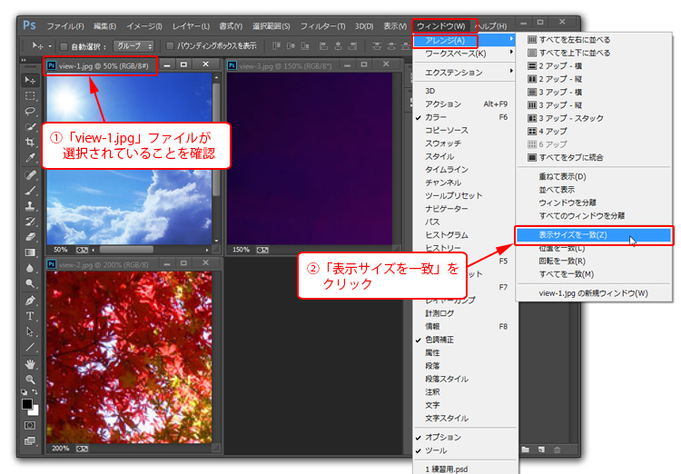
[view-2.jpg]、[view-3.jpg] のファイルの表示倍率が
[view-1.jpg]のファイルと同じ50%になります。
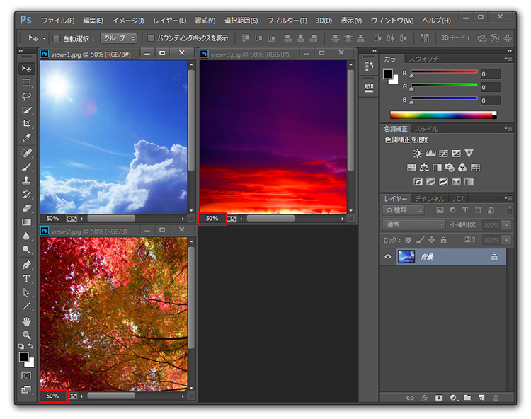
ファイルをタブ状態に戻します。
メニューバーの[ウィンドウ]から[アレンジ]-[すべてをタブに統合]を選択します。
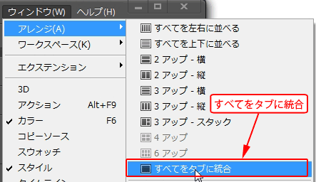
[view-1.jpg]、[view-2.jpg]、[view-3.jpg]のファイルが一つのタブに統一されます。
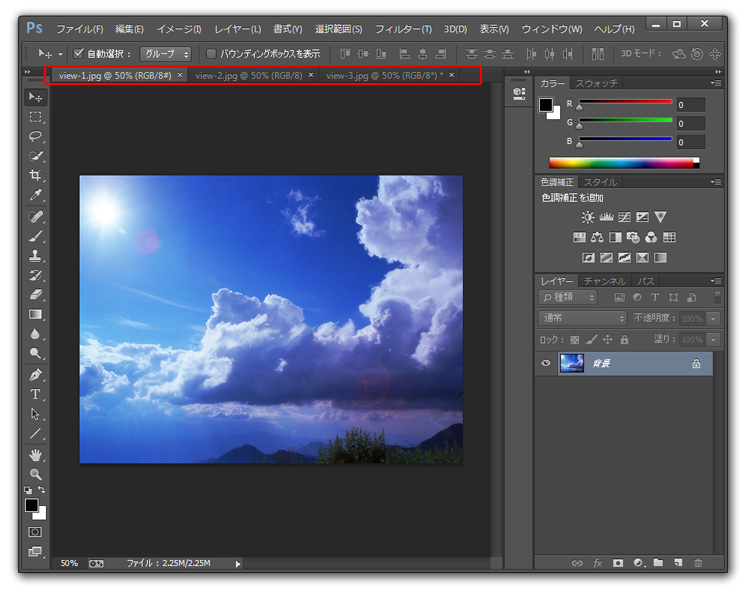
以上でこの項の学習は終了です。
ファイルは閉じて次の項へ進んでください。